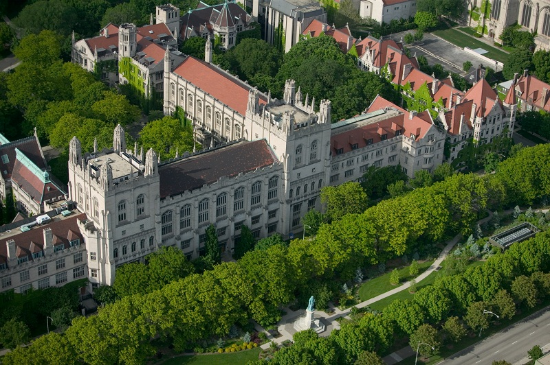

The University of Chicago is a school located in Chicago, Illinois, and it was founded in 1890. The campus setting is urban and the size is 215 acres. The school utilizes a quarter-based academic calendar and has a 6:1 student-faculty ratio with 75.8% of classes having fewer than 20 students. The top five majors at UChicago are social sciences, biological and biomedical sciences, mathematics, English, and social services. UChicago has a thriving Greek life, with a variety of Greek letter organizations. The mascot for UChicago is the phoenix. Notable alumni include Bernie Sanders, David G. Booth, Carl Sagan, and Bernie Sanders.
